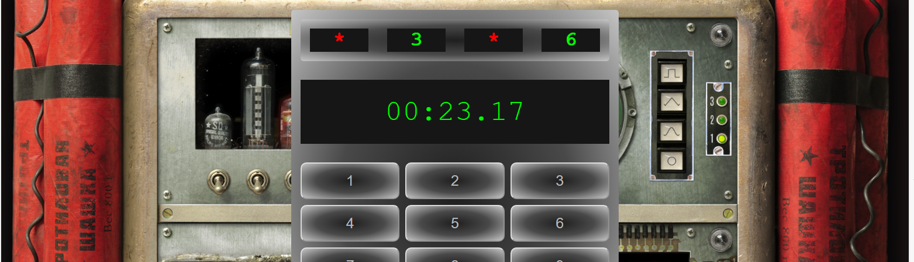
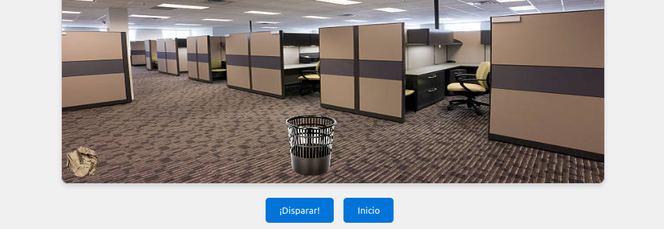
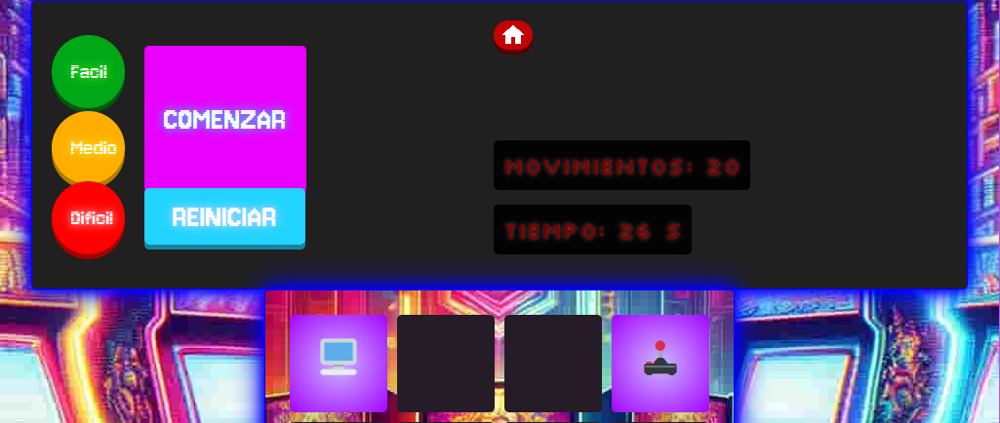

Índice de prácticas
Repositorio de prácticas CSAAI 2023-2024.
Práctica 1: CV Web
Para esta primer práctica vamos a desarrollar un CV utilizando HTML y CSS.
Ver la prácticaPráctica 2: ¡BOOM!
Para esta segunda práctica vamos a utilizar lo que sabemos sobre javascript para programar un juego sencillo. Consiste en adivinar la clave secreta de cuatro números lo más rápido posible.
Ver la prácticaPráctica 3: Tiro Parabólico
Para esta tercera práctica vamos a utilizar lo que sabemos sobre javascript para programar un Tiro Parabólico. Consiste en lanzar un proyectil para acertar a un objetivo.
Ver la prácticaPráctica 4: Memory
En esta cuarta práctica, mostraremos un tablero de tarjetas, cada una de las tarjetas se puede voltear y emparejar.
Ver la prácticaPráctica 5: Simulando la red

Vamos construir una red aleatoria de un máximo de 5 nodos, con dos conexiones cada nodo. Calcularemos la ruta mínima para llegar del primer nodo al último. Y mostraremos esta ruta y el tiempo total de transmisión de un paquete de datos multimedia teniendo en cuenta solo el tiempo de retardo en cada uno de los nodos que forman parte de la ruta mínima.
Ver la práctica